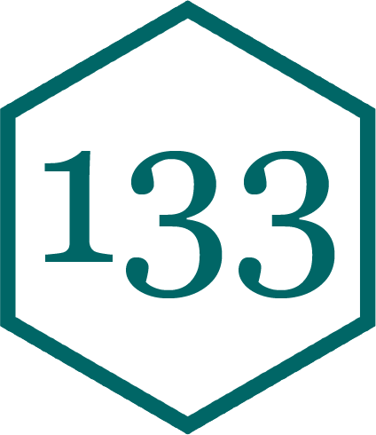

Loading and Unloading
Plain Text File
A file that stores only characters, so it can be opened and read by any text editor, by cat in the shell, or by readLines() in R.
Binary File
A file that stores raw bytes meant to be decoded by specific software. Opened as text, it looks like gibberish.
Every file is bytes on a disk. Only plaintext encodes characters you can read.
PDF (.pdf)
Excel (.xlsx)
readxl to decodeRecall the ZEV data from the Data Cleaning lecture.
[1] "Readme" "County" "ZIP" # A tibble: 77,898 × 7
`Data Year` Quarter COUNTY FUEL_TYPE MAKE MODEL `Number of Vehicles`
<dbl> <dbl> <chr> <chr> <chr> <chr> <dbl>
1 2008 3 Alameda Electric Tesla Roads… 1
2 2008 3 San Francisco Electric Tesla Roads… 1
3 2008 3 San Mateo Electric Tesla Roads… 3
4 2008 3 Santa Clara Electric Tesla Roads… 4
5 2008 3 Sonoma Electric Tesla Roads… 1
6 2008 4 Alameda Electric Tesla Roads… 5
7 2008 4 Contra Costa Electric Tesla Roads… 1
8 2008 4 Los Angeles Electric Tesla Roads… 17
9 2008 4 Marin Electric Tesla Roads… 3
10 2008 4 Napa Electric Tesla Roads… 1
# ℹ 77,888 more rows
readxlonly reads. To write a data frame out to.xlsx, usewritexl::write_xlsx(), but consider whether a CSV would do.
| Extension | Structure | Example from class |
|---|---|---|
.txt |
None; just lines of characters | Index cards |
.md |
Markdown syntax for formatted prose | README.md |
.R |
R code | Your scripts |
.qmd |
YAML + Markdown + code cells | project.qmd |
.yml |
key: value pairs, nested by indentation |
_schedule.yml |
.csv |
Rows on lines, columns split by commas | EV registrations |
.json |
Nested {"key": value} objects and [arrays] |
Project 3 |
.txt: Index Cards Revisited.txtEach element of a character vector becomes one line.
.md: Text Plus MarkupA Markdown file is a .txt file with markup: extra characters that tell a renderer how to display the text.
Song of Summer
Golden Klaxons, card 127
.RAn R script is plain text containing R code.
.qmd: Three Languages in One Filehello-penguins.qmd
YAML metadata, Markdown prose, and R code cells, all in one plain text file that Quarto knows how to split apart.
YAML
A plain text format for configuration and metadata built from key: value pairs. Indentation marks nesting and a leading - marks an item in a list.
List of 5
$ topic : chr "Data in Trees"
$ display-date: chr "Aug 28"
$ date : chr "2026-08-28"
$ image : chr "02-data-in-trees/images/tree-banner.webp"
$ docs :List of 2
..$ :List of 2
.. ..$ type: chr "Slides"
.. ..$ href: chr "02-data-in-trees/slides.qmd"
..$ :List of 2
.. ..$ type: chr "Project"
.. ..$ href: chr "projects/1-index-cards/project.qmd"Write a list back out with
write_yaml(day, "day.yml").
CSV
A comma-separated values file stores tabular data with each row on a new line and each column delimited by a comma. A lingua franca for storing data frames in your file system.
What does a data frame look like as plain text?
species,island,bill_length_mm,bill_depth_mm,flipper_length_mm,body_mass_g,sex,year
Adelie,Torgersen,39.1,18.7,181,3750,male,2007
Adelie,Torgersen,39.5,17.4,186,3800,female,2007
Adelie,Torgersen,40.3,18,195,3250,female,2007NAElectric vehicle registrations by state, which we’ll explore next time.
(base) andrewbray@MacBookPro fall-2026-private % cd 16-reading-writing/data
(base) andrewbray@MacBookPro data % ls
ev-registrations.csv ev-xlsx.png
(base) andrewbray@MacBookPro data % cat ev-registrations.csv
State,Count
Alabama,"13,047"
Alaska,"2,697"
Arizona,"89,798"
Arkansas,"7,108"
California,"1,256,646"
Colorado,"90,083"
Connecticut,"31,557"
Delaware,"8,435"
District of Columbia,"8,066"
Florida,"254,878"
Georgia,"92,368"
Hawaii,"25,565"
Idaho,"8,501"
Illinois,"99,573"
Indiana,"26,101"
Iowa,"9,031"
Kansas,"11,271"
Kentucky,"11,617"
Louisiana,"8,150"
Maine,"7,377"
Maryland,"72,139"
Massachusetts,"73,768"
Michigan,"50,284"
Minnesota,"37,050"
Mississippi,"3,590"
Missouri,"26,861"
Montana,"4,608"
Nebraska,"6,920"
Nevada,"47,361"
New Hampshire,"9,861"
New Jersey,"134,753"
New Mexico,"10,276"
New York,"131,250"
North Carolina,"70,164"
North Dakota,959
Ohio,"50,393"
Oklahoma,"22,843"
Oregon,"64,361"
Pennsylvania,"70,154"
Rhode Island,"6,396"
South Carolina,"20,873"
South Dakota,"1,675"
Tennessee,"33,221"
Texas,"230,125"
Utah,"39,998"
Vermont,"7,816"
Virginia,"84,936"
Washington,"152,101"
West Virginia,"2,758"
Wisconsin,"24,943"
Wyoming,"1,139"'data.frame': 51 obs. of 2 variables:
$ State: chr "Alabama" "Alaska" "Arizona" "Arkansas" ...
$ Count: chr "13,047" "2,697" "89,798" "7,108" ...
Countcame in as character:"13,047"isn’t a number to base R.
readr# A tibble: 51 × 2
State Count
<chr> <dbl>
1 Alabama 13047
2 Alaska 2697
3 Arizona 89798
4 Arkansas 7108
5 California 1256646
6 Colorado 90083
7 Connecticut 31557
8 Delaware 8435
9 District of Columbia 8066
10 Florida 254878
# ℹ 41 more rows. . .
read_csv()reports the column types it guessed and recognizes"13,047"as the number 13047.
Without
row.names = FALSE, base R adds an unnamed column of row numbers to the file.
JSON
JavaScript Object Notation: a plain text format of nested objects ({"key": value}) and arrays ([a, b, c]). The most common format for data sent over the web.
An array of objects that share the same keys becomes a data frame.
id song distance
1 127 Golden Klaxons 3000?
2 14 Espresso 40
3 3 Let It Go 1200An array of objects that share the same keys becomes a data frame.
[
{
"id": 127,
"song": "Golden Klaxons",
"distance": "3000?"
}
] To write to a file:
write_json(cards, "data/cards.json").
"key": "value" wrapped in { } (JSON); key: value (YAML)"key": "value" wrapped in { } (JSON); key: value (YAML)"key": "value" wrapped in { } (JSON); key: value (YAML)[ ], separated by commas (JSON); indented items, each starting with - (YAML)"key": "value" wrapped in { } (JSON); key: value (YAML)[ ], separated by commas (JSON); indented items, each starting with - (YAML){ } objects inside [ ] (JSON); pairs indented under each - (YAML)| Format | Base R | Tidyverse and friends |
|---|---|---|
.txt |
readLines() / writeLines() |
read_lines() / write_lines() (readr) |
.csv |
read.csv() / write.csv() |
read_csv() / write_csv() (readr) |
.yml |
read_yaml() / write_yaml() (yaml) |
|
.json |
fromJSON() / write_json() (jsonlite) |
|
.xlsx |
read_excel() (readxl) / write_xlsx() (writexl) |
Why prefer readr?
read_*() / write_*() namingReading and writing data is like working the docks: cargo (data) arrives packed in containers (files). Some crates you can pry open by hand (plain text); others need special tools (binary). Reading unloads the cargo into town (R); writing packs it back up to ship out.
Request your data now!
Look for multiple data files and at least one JSON.
